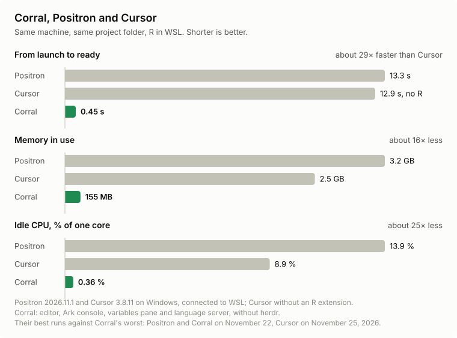
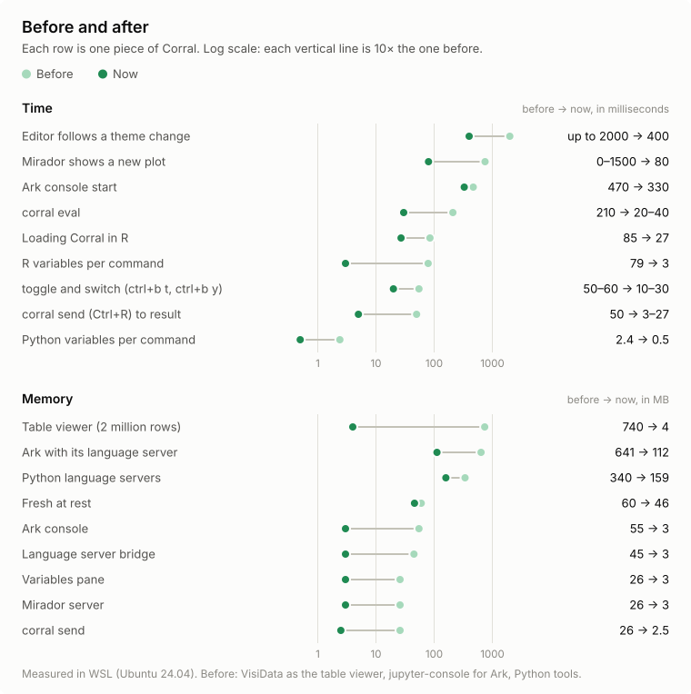

Performance
A full Corral layout has R ready in about 400 milliseconds and uses about 155 MB, or about 200 MB counting herdr. These are the measurements against Positron and Cursor, how long View() takes with a big table and SQL runs in the session, and the gains of each piece of Corral since it became one Rust binary.
Corral and Positron

How it was measured
- November 22, 2026, on the same machine: Windows with WSL (Ubuntu 24.04), a test project folder, R 4.6.1, two runs each.
- Positron is version 2026.11.1, on Windows, connected to WSL.
- Corral is a full layout: the editor, the Ark console, the variables pane and the language server. herdr isn't in this column, because it is open anyway for the agent; it is measured on its own below. The terminal app isn't counted at all: it depends on which one you use, while Positron's figures include its own window.
- The chart sets Positron's best run, and Cursor's (below), against Corral's worst.
Results
| What | Positron | Corral |
|---|---|---|
| From opening it to R ready | 13.3–17.7 s | 394–453 ms |
| Memory in use | 3.2 GB (1.55–1.58 GB in Windows and 1.64–1.66 GB in WSL) | 154–155 MB |
| CPU at rest | 13.9–19.6 % of one core (10.9–16.8 % in Windows and 2.9–3.0 % in WSL) | 0.36 % |
| R (Ark) | 117 MB | 99 MB |
| From Ctrl+R to the result on screen | not measured | 3–27 ms |
In Corral, the layout is created in 31 ms, the editor is ready in 229–288 ms and the R console in 394–453 ms. From corral send (what Ctrl+R runs) to the result on screen takes about 5 ms; the first call takes about 25 ms.
Where the memory goes
| Positron | Memory |
|---|---|
| The window, in Windows | 1.55–1.58 GB |
| Extension host (WSL) | 676–678 MB |
| Server (WSL) | 275–294 MB |
| Copilot (WSL) | 241–242 MB |
| Data (WSL) | 136–138 MB |
| Ark with R (WSL) | 117 MB |
| ptyHost (WSL) | 68–72 MB |
| fileWatcher (WSL) | 59 MB |
| Corral | Memory |
|---|---|
| Ark with R | 99 MB |
| Fresh | 46 MB |
Each corral process | 2–3 MB |
R weighs about the same in both, because both run Ark. The difference is the interface. In Corral, corral runs as a few small processes: the console, the bridge to the language server, the variables pane.
In an earlier measurement, Positron also started Python with its language server (about 440 MB), because the folder has a pyproject.toml. Corral opens Python only when you use it. Positron's time from Ctrl+R to the result wasn't measured, because that would mean driving its interface with clicks.
An earlier measurement, before Fresh, loading R and the language servers were optimized, gave Corral 181 MB and 0.7 % CPU at rest.
herdr
Measured on its own the same day, with herdr 0.9.5: a herdr with only a Corral layout open, and its screen in a terminal of 200 × 50 characters, after 15 seconds and then 30 seconds at rest.
| herdr | Memory | CPU at rest |
|---|---|---|
| The server (keeps the panes) | 23 MB | 0.20 % |
| The client (the screen you look at) | 23 MB | 0.20 % |
With herdr, Corral uses about 200 MB and 0.76 % of one core at rest. herdr grows with what it holds: in a day-to-day session with 10 workspaces and 16 panes, its server used 47 MB and its client 17 MB.
Corral and Cursor
Cursor is the editor many developers already have open, so it was measured the same way as Positron. Here it has no R extension: its figures are Cursor alone, and R would add to them.
How it was measured
- November 25, 2026, on the same machine and with the same project folder: Cursor 3.8.11 (VS Code 1.105) on Windows, connected to WSL, opened from the command line. Five starts for the time and the memory, two for the CPU at rest, closing Cursor and its server in WSL between them; a first start that installed the server isn't counted.
- Cursor is ready when its processes in WSL go one second without CPU after its extension host starts. The memory is taken 15 seconds later, and the CPU at rest over the next 30 seconds, in Windows and in WSL.
- Corral is a full layout, the same day, herdr included this time: Cursor's figures include its own window.
Results
| What | Cursor | Corral |
|---|---|---|
| From opening it to ready | 12.9–19.0 s, without R | 379–398 ms, with R ready |
| Memory in use | 2.5–2.9 GB (1.86–2.19 GB in Windows and 674–687 MB in WSL) | 173 MB, herdr included |
| CPU at rest | 8.9–10.4 % of one core (8.5–9.9 % in Windows and 0.4–0.5 % in WSL) | 1.4–1.5 %, herdr included |
Most of Cursor's weight is its window in Windows. In WSL its server uses about 680 MB: one Node process of about 470 MB, the extension host, and two smaller ones.
A big table in View()
View(df) does two things: R saves the table as a Parquet file, and the viewer asks DuckDB only for what is on screen. Saving is the wait you notice, it grows with the table and it happens on every View(). After that, each screen takes milliseconds at any size: the viewer starts DuckDB once and keeps it while the table is open, and closes it 30 seconds after the last query.
How it was measured
- November 25, 2026, on the same machine, with the script in the repository:
Rscript bench/view.R(bench/view.R). - The sales table in the screenshots: 10,000,000 rows and 7 columns. R 4.6.1, DuckDB 1.5.6. Ten runs with each package, three with CSV.
- Saving uses the same calls as
View(). The first screen is starting DuckDB and the three queries the viewer runs before it draws: the columns, the row count and the first 200 rows.corral _table --benchtimes them with the viewer's own code. Opening the popup isn't counted, a few milliseconds. - Each figure is the median, with the fastest and slowest run in brackets. Python's
View()wasn't measured.
Results
| What | nanoparquet 0.5.2 | arrow 25.0.1 | CSV, without either |
|---|---|---|---|
| Saving the table | 1.1 s (1.1–1.4 s) | 1.8 s (1.8–2.9 s) | 13.2 s (12.7–14.1 s) |
| The first screen | 14 ms (14–16 ms) | 14 ms (13–16 ms) | 348 ms (324–399 ms) |
View() in all | 1.2 s (1.1–1.4 s) | 1.8 s (1.8–3.0 s) | 13.6 s (13.0–14.4 s) |
| A page from the middle | 8 ms (7–8 ms) | 15 ms (15–17 ms) | 753 ms (739–753 ms) |
| Sorting every row by a column | 25 ms (24–27 ms) | 35 ms (31–45 ms) | 254 ms (232–280 ms) |
| The file | 166 MB | 172 MB | 526 MB |
Until Corral 0.1.17 the viewer started DuckDB for every query, and with DuckDB 1.4.4 the first screen took 30 ms with nanoparquet, a page from the middle 16 ms and a sort 35 ms. DuckDB 2.0.1 starts three times slower than 1.5.6 (22 ms against 8 ms), so Corral stays on 1.x for now.
View() uses nanoparquet when it is installed, and arrow when it isn't or for a column nanoparquet can't write, such as POSIXlt. With other tables (bench/writers.R, ten runs each, each one after gc()), nanoparquet was faster: 0.82 s against 1.31 s for 2 million rows of 50 numeric columns, 1.30 s against 4.29 s for 5 million rows of text, and 0.30 s against 0.39 s for 5 million rows of factors, dates and missing values.
In a long session
Corral is meant for a day's work, so what counts is that View() behaves the same the twentieth time as the first. bench/repeat.R writes the ten million rows 20 times in one session that also holds 5 million other strings, one R process for each package:
| 20 times in one session | nanoparquet | arrow |
|---|---|---|
| Time, median (fastest–slowest) | 1.20 s (0.98–3.23 s) | 1.79 s (1.66–3.54 s) |
| R's memory before the first | 1.0 GB | 1.0 GB |
| After the first | 1.2 GB | 1.4 GB |
| After the twentieth | 1.6 GB | 6.4 GB |
With nanoparquet, R's memory settles at about 1.6 GB and stays there; 40 times gave the same. With arrow it grows by about 265 MB each time and isn't given back. That is why corral doctor and the installer suggest nanoparquet even when arrow is installed.
nanoparquet's time varies more when the session holds a lot, because it works inside R and R's garbage collector can run during the write. Calling gc() before each write doesn't help: counting the collection, it took 0.1 to 0.45 s longer, so View() doesn't do it.
Without either package, View() falls back to CSV, which is more than ten times slower to save, and then every page and sort reads the whole file again. nanoparquet has no dependencies, so it is the one to install.
SQL in the session
SQL runs on DuckDB inside the R or Python session (SQL), so the console starts as before: R ready in 365–392 ms with or without it. DuckDB loads with the first query.
- November 25, 2026, the same machine, R 4.6.1 with the duckdb package 2.0.0, Python with duckdb 2.0.1, a data frame of a million rows.
- The first query of a session in R takes about 220 ms: loading duckdb (156 ms), connecting (20 ms) and compiling Corral's SQL functions, once. In Python, importing duckdb takes about 90 ms.
- After that, the time is the query's own:
SELECT 42in 1–8 ms, and aGROUP BYover the million rows in 20–23 ms, the same as DuckDB alone in R (18–19 ms). DuckDB reads the data frame where it is: registering it takes 2 ms.
Checkpoints
The consoles keep a checkpoint of their objects so they come back after a crash (Consoles). It only counts as worth it if you don't feel it, so it was measured where you would: the time Corral's own work keeps the prompt waiting after each command, timed inside R and Python (CORRAL_TIMING).
How it was measured
With the live tests in rs/tests/live.rs (checkpoints_cost_report, python_checkpoints_cost_report, restore_time_report), on the same WSL laptop, with R 4.6.1 under Ark and Python 3.14. Each row is 20 requests with checkpoints off and 20 with them on, alternating, each after a warm-up command, in a session already holding the data shown.
Results
| The prompt waits, median | Off | On |
|---|---|---|
| R, 261 MB in use, a command that changes nothing | 0.36 ms | 0.65 ms |
| R, 261 MB in use, a command that changes an object | 1.2 ms | 3.6 ms |
| R, 887 MB in use, a command that changes nothing | 0.38 ms | 0.65 ms |
| R, 887 MB in use, a command that changes an object | 1.3 ms | 6.6 ms |
| Python, 531 MB in use, a cell that changes nothing | 0.04 ms | 0.05 ms |
| Python, 531 MB in use, a cell that changes an object | 0.05 ms | 0.28 ms |
What a changed object costs is starting the copy of the process (a fork), which takes longer the more memory R holds: about 5 ms with 450 MB, 9 ms with 1 GB and 24 ms with 2 GB, measured on their own. Hashing and writing happen in the copy, while you work.
In a long session
200 commands, one in five changing a table of a million rows, repeated with checkpoints off, on, off and on in the same R; then 1,000 more with them on:
| 200 commands | R's memory | The prompt waits, median (90th percentile) | Copies left behind |
|---|---|---|---|
| Off | 708 → 743 MB | 0.23 ms (0.79 ms) | 0 |
| On | 743 → 785 MB | 0.67 ms (9.1 ms) | 0 |
Over the 1,000 more, R's memory went 792, 815, 693, 701, 724 and 788 MB every 200 commands: it goes up and down as R hands memory back, with no new highs. The checkpoint took 170 MB on disk, the same as the objects serialized, and no copy was ever left uncollected. The 90th percentile is the one command in five that changes the table.
After a crash, R was back with its objects 1.2 seconds after it was killed, both with 250 MB of objects (10 million rows, one column of text) and with about 800 MB (40 million rows of numbers).
What the tests check
The live tests kill R or Python with kill -9, the way a crash ends them, and then look at what came back:
- R: a table of a million rows (its sums compared before and after), a function, an
lm()model and a change made in place (v[1] <- 5) come back the same; a package attached withlibrary()is attached again; a file connection is reported as not kept, and the console shows the message. - Python: a dictionary, a function and an instance of a class defined in the session, and
jsonimported asjs, come back; athreading.Lockis reported as not kept; the crashed Python leaves no temporary folder behind. - Closing on purpose, with
q()orcorral close, starts the next console empty.
To run them, and the measurements on this page, from a copy of the repository on a machine with herdr, R, Ark and uv:
$ cargo test --release --manifest-path rs/Cargo.toml --test live -- --ignored --test-threads 1
$ cargo test --release --manifest-path rs/Cargo.toml --test live -- --ignored --nocapture checkpoints_cost_report python_checkpoints_cost_report restore_time_reportCorral in Rust

The engines were already in Rust: herdr, Fresh, Ark, Air, Ruff and uv. Now all of Corral is one Rust binary, built from rs/ with no dependencies. The only parts that aren't Rust run inside your own sessions: r/corral.R in R and py/ in IPython.
The first pieces to move to Rust were what runs on every key press, what Claude uses and the processes that stay open. These are the gains of that stage:
| Piece | Rust | Before, in Python |
|---|---|---|
corral send (Ctrl+R, F5, ctrl+b enter) | under 10 ms, 2.5 MB | about 50 ms, 26 MB |
toggle and switch (ctrl+b t, ctrl+b y) | 10–30 ms | 50–60 ms |
Variables pane (corral vars --pane) | 3 MB, 0.1 % CPU | 26 MB |
Bridge to Ark's language server (corral _lsp r) | 3 MB | 45 MB |
Mirador's server (corral _mirador) | 3 MB | 26 MB |
corral eval (Claude runs code in your console) | 20–40 ms | about 210 ms |
Ark console (corral _console r) | 3 MB, starts in 0.33 s | jupyter-console: 55 MB, 0.47 s |
What repeats after each command, and what keeps running in the editor, went down too:
| What | Before | Now |
|---|---|---|
| R variables after each command | 79 ms | 3 ms, or 4 ms if a variable changed |
| Python variables after each command | 2.4 ms | 0.4–0.6 ms |
| Fresh plugin at rest (the editor's CPU) | 1.0 % | 0.56 % |
| The editor follows a herdr theme change | up to 2 s | 0.4 s |
| Fresh at rest, with the plugins it doesn't use turned off | 60 MB, 0.57 % CPU | 46 MB, 0.20 % |
Loading Corral in R (corral.R) | 85 ms, 23 MB | 27 ms, 17 MB |
| Python language servers | 340 MB (pylsp and Ruff) | 159 MB (ty and Ruff) |
| Mirador shows a new plot | 0 to 1.5 s (it asked every 1.5 s) | about 80 ms |
| A plot of 100 thousand points in Mirador | 7.1 MB SVG | 0.7 MB PNG |
While you work, each command in the R console takes about 2.5 ms from Enter to the next prompt (1.5 ms without Corral), also with a table of 2 million cells in memory. In Python it takes about 6 ms, with or without Corral.
What changed in R and Python
corral.R no longer loads packages it doesn't need at startup. httpgd (with unigd, systemfonts, lifecycle and cli) loads with the first plot, and each variable's fingerprint uses the memory address base R gives, without rlang, which took 54 ms to load.
Variables are described again only if the object changed (another memory address, another length, other dimensions or, in tables, other column types), and the file the pane reads is rewritten only when something changed.
The Python language server and Ruff run straight from the environment uv keeps for them in its cache (corral _lsp python, corral _lsp ruff). Through uvx or uv run, uv stayed alive the whole time as a waiting parent process, about 45 MB each. The Python console still uses uv run, because IPython has to run inside the project's environment.
The Python language server moved from pylsp to ty. In the same test with pandas, ty uses 141 MB in one process (pylsp, 172 MB in two), starts in milliseconds (pylsp, in half a second), completes in half the time and shows help in 2 ms with the full documentation (pylsp took 0.3–0.4 s and only showed the signature).
What changed in the editor
Corral's Fresh plugin no longer checks anything on a timer, except the theme every 5 seconds on a system where it can't watch the theme files. It copies the draft when you stop typing for 0.4 s (at least every 2 s if you keep typing), watches the theme files through the file system, and opens the folder view when a draft appears.
Fresh comes with about 50 plugins. Corral turns off the ones it doesn't use in fresh/config.json: agent orchestration, which herdr already does, welcome screens, Kubernetes, devcontainers, and languages such as C# or C++. With that, Fresh opens with 46 MB instead of 60, and at rest it uses 0.20 % CPU instead of 0.57 %. Checking every 2 s whether the open files changed (when Claude edits them, for example) costs so little that it doesn't show in the measurements, so it stays.
One binary
The binary talks to herdr over its socket and to Ark over the Jupyter protocol (ZeroMQ and HMAC-SHA256 signatures, implemented in rs/src/zmtp.rs and rs/src/sha256.rs). Everything else is in the binary too: it reads herdr's configuration with its own TOML reader, unpacks Ark (published as a zip), Fresh, DuckDB and Air with its own decompressor, and writes the editor's theme and the palette.
If you change something in rs/, build it again with cargo build --release. corral --version says which folder the binary you are using comes from.